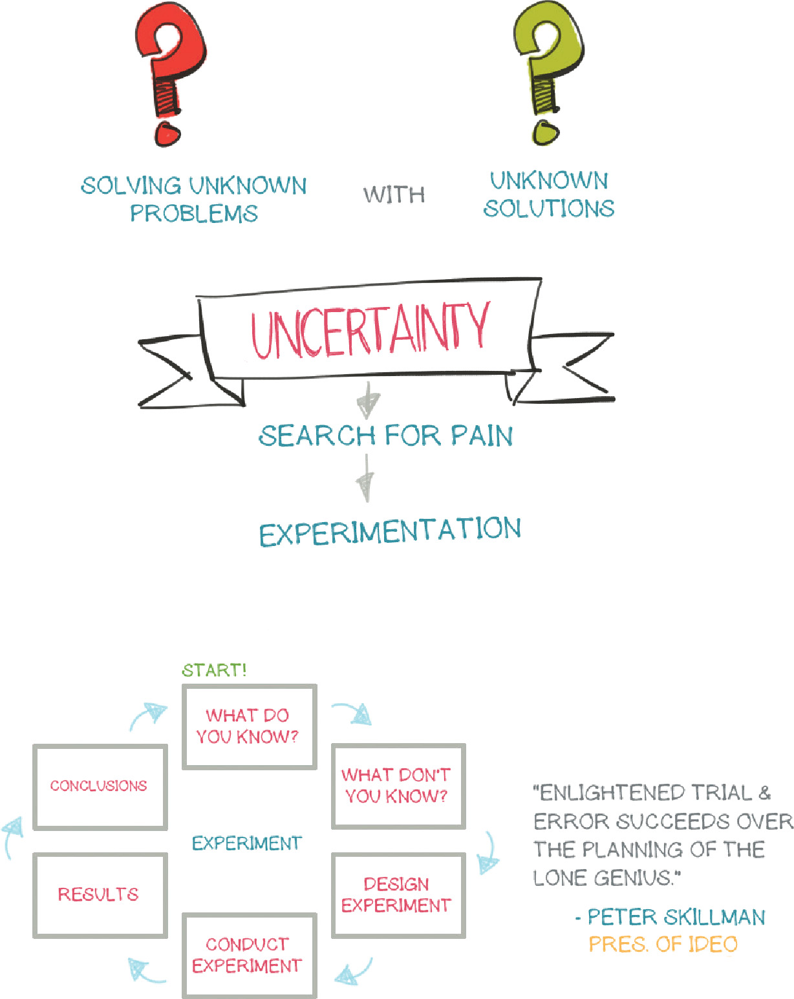
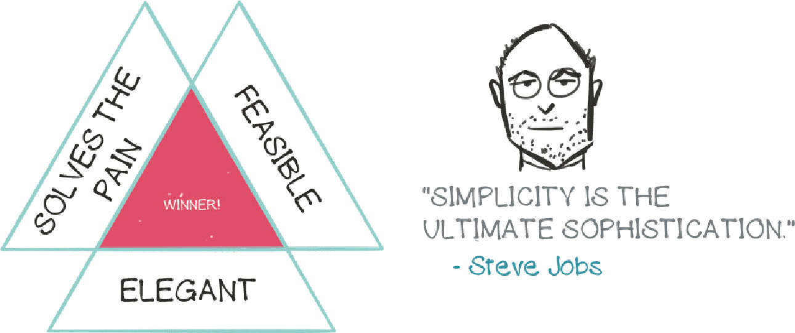
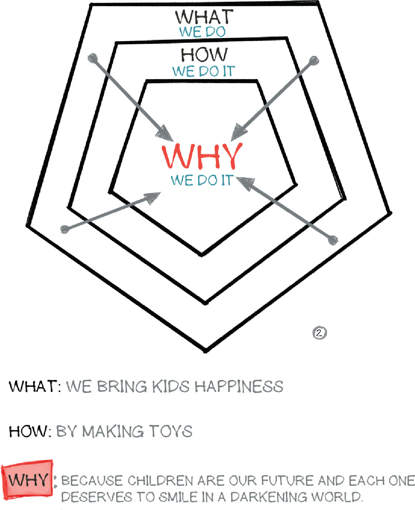
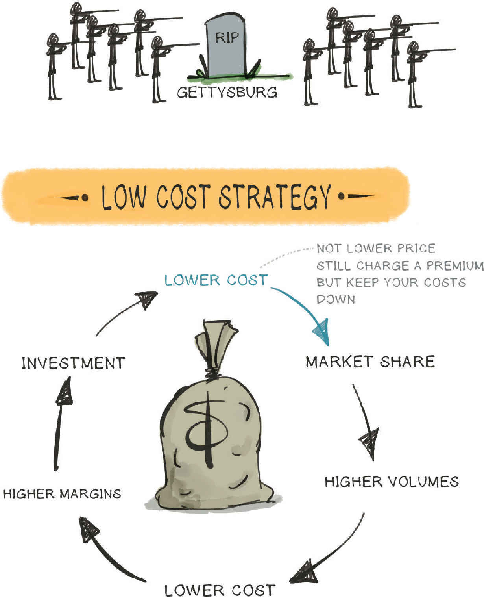
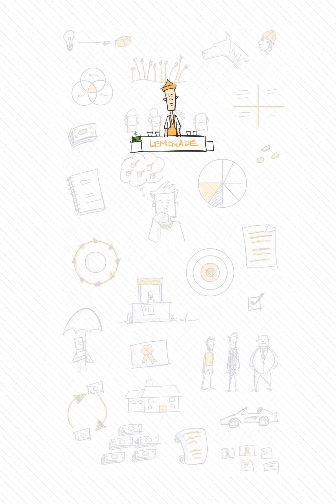
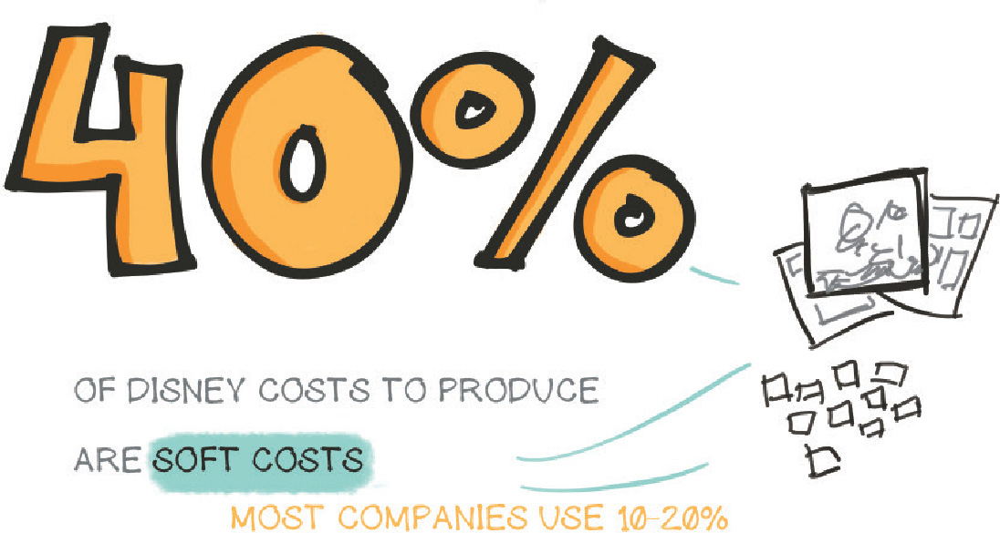

Copyright © 2019 by Jason Barron
All rights reserved
For information about permission to reproduce selections from this book, write to trade.permissions@hmhco.com or to Permissions, Houghton Mifflin Harcourt Publishing Company, 3 Park Avenue, 19th Floor, New York, New York 10016.
hmhbooks.com
Library of Congress Cataloging-in-Publication Data is available.
ISBN 978-0-358-02395-1
Cover illustration by Jason Barron
Author photograph © Jackie Barron
eISBN 978-0-358-02539-9
v1.0319
To Jackie, Josh, James, Jonah, Josie & Junie
(My whole world)
Preface
In short, this book contains two long years of business school, all neatly packaged into one highly illustrated volume.
Experts tell us that 60% of people are visual learners and—let’s face it—beyond that, 100% of people don’t want to read boring stuff. Now, with this book you can understand faster, absorb better, and recall quicker the biggest and most useful ideas that you would learn from studying for a Master’s of Business Administration degree.
A quick word about the illustrations that follow. Years ago Mike Rohde coined the term “sketchnotes,” and I’ve been a fan ever since. Rather than taking extensive linear notes that no one (including yourself) will ever read again, I felt that simply capturing the main points visually would create a much more interesting and useful resource for later consumption. As they say, “A picture is worth 1,000 words.”
At the beginning of my MBA studies, I took on the crazy goal to try and create “sketchnotes” throughout the entire program. And something unexpected happened. For a class full of extremely smart people (all smarter than me), I was surprised at the high level of interest they had in my visual notes as I went along.
What you have in front of you is the end product of all my sketchnotes as I attended the BYU Marriott School of Business. Whether you’ve never been to business school (and never will), or have already attended, or are in a current MBA program yourself, I created this book with you in mind. Each chapter is based upon traditional business school classes, and is packed with concepts that are accompanied with a written narrative to help you better understand it all.
Feel free to skim, jump, or dive through the content any way you want. The only rules are to have fun, to be curious, and to discover on your own. You will be glad you did.
Now sit back, relax, and enjoy all the knowledge soaking into your (genius) brain.
Author’s Note
You’re smart: I just spent 86 class days, endured 516 hours of various lectures, completed mountains of homework, and shelled out tens of thousands of dollars in tuition fees, and you can benefit from it all with this book at a fraction of the cost in the comfort of your own home. Nice business decision.
My name is Jason Barron, and I’m a designer. I’ve always been doodling, sometimes when I shouldn’t—like in class as a kid. Fast-forward 20 years and not much has changed. Except that I decided to put my lifelong doodling habit to work when I received an MBA from a top 40 business school, Brigham Young University.
Each class period I would sketchnote what the professor was saying, including key thoughts during class, and from reading assignments. I would capture the essence of what was being taught and then I would distill the complex lectures into simplified concepts.
The end result is this book, which is worth more than gold. It is the goose that keeps on giving luscious golden eggs in the form of paper pages. Save yourself countless hours and read this book in a fun, fast, and memorable way. (You will love it, and if not you can always re-gift it!)
You ready to get smarter? (If that’s even possible, you genius you.) Let’s get to it!
Chapter One
Leadership
Leadership is more than management. It’s about inspiring change and improving results through who you are and how you motivate others.
Fundamentals
Strategy
Creating the future vision and positioning the company for ongoing success
Execution
Building organizational systems to deliver results based on the strategy
Talent Management
Motivating, engaging, and communicating with employees
Talent Development
Grooming employees for future leadership
Personal Proficiency
Acting with integrity, exercising social and emotional intelligence, making bold decisions, and engendering trust
WHAT IS YOUR LEADERSHIP
BRAND?
When people see you, what do they think/feel about you? That’s your brand.
5 STEPS
to building a brand that
GETS RESULTS
1) Nail down the results you want to achieve over the next 12 months
Make sure to consider the interests of your customers, investors, employees, and the organization as a whole.
2) Decide what you want to be known for
Looking at your results, how do you want to be perceived? Pick six descriptors that you want to be known for. Example: Humble, Optimistic, Dedicated, etc.
3) Combine to define
Combine your six descriptors into three two-word phrases. Example: Humbly Optimistic, Selflessly Dedicated, etc.
4) Create your leadership brand statement & test it
I want to be known for being (three phrases) so that I can deliver ———. Then ask, “Does this best represent me?” “Does it create value for my stakeholders?” “Are there any risks?”
5) Make it real
Share your brand with others and ask if they feel it aligns with how you truly behave. Make adjustments. Most importantly, your brand is a promise—so make it real and DELIVER.
Move your employees from being disengaged to engaged with autonomy, mastery, and purpose. Give them the freedom to be creative, to be good at what they do, and to have a purpose behind their work.
If you want to be happy in your job you need to hit the sweet spot. You need a balance of competence (really good at something), passion (need I say more?), and opportunity (there is a market need).
Although it is hard to change people, nothing changes people faster than changing their environment. Their environment then shapes the culture.
Look around. What is the “smell” of the place they work? Is it stuffy? Compliance driven? Is it quiet? Are there cubicles that block them from others? Does it feel dead? That is your culture. Change that and people change along with your culture.
Some stress is helpful to increase performance but there comes a point where performance drops. Make sure to take breaks, exercise, and relax to maintain performance.
CONTEXT includes the reward system, goals, culture, tone, and environment that the team will be working in.
COMPOSITION includes who is on the team and their skills and personalities to get the job done. This is where hiring the right people who mesh with the team is critical.
COMPETENCIES includes having the right people whose combined skill can solve the problem. It’s about setting the right goal and leveraging the team’s skill to achieve it.
CHANGE includes the team’s ability to adapt to rapidly changing circumstances while working towards the goal.
Chapter Two
Corporate Financial Reporting
Accounting is the language of business. Unless you are keeping track of how your company is doing, you won’t know how to improve it. Everything in this course revolves around these three financial statements.
You are the new CEO of a lemonade stand. You need a loan of $50 (liability) to buy some assets. You purchase a stand for $20 and have $30 left over.
OK. So at any given point in time you have Assets, Liabilities, and Equity. The secret is, Assets = Liabilities + Equity. That’s called the “Accounting Equation.” Your loan was $50 (Liability), you used it to buy a stand for $20 (Asset), and have $30 cash (Asset). You have $50 debt (Liability) and $50 of assets. A = L + E.
BAM! You just sold $90 worth of lemonade. Nicely done. Your balance sheet looks something like this now.
A balance sheet is a snapshot in time and is a good indicator of your net worth as a business. Now let’s jump into your income statement.
Sure. You sold $90 but the cups, sugar, and lemons cost $20. Your gross profit is $70. You also had to pay for some administrative overhead. That left you with $67 operating income or EBIT (Earnings Before Interest & Taxes). You then need to take out interest and taxes, which leaves you with a net profit of $64.
COMMON SIZED financial statements are a great way to figure out how you are doing over time, or to compare one company in a similar industry with another. All you do is divide everything by sales to see where any differences are.
Pro forma is just a fancy way of saying “what the future could look like.” It is forecasting based on an increase in sales. Look at your financial statement and everything on it that is dependent on sales. In this case, let’s say COST OF GOODS SOLD (COGS) and ADMINISTRATIVE expenses both increase with sales.
If sales increased by 20%, what would our net profit be? Look at the previous page and see that COGS was 22% of sales, and your administrative expense was 3%. When increasing $90 by 20% ($108), you then figure out what 22% and 3% (COGS and administrative, respectively) of $108 are.
FINANCIAL RATIOS
Financial ratios are a great way to compare how you are doing over time, to diagnose any issues, or to see how one company in a similar industry stacks up against another. Here are some of the most common.
Debt-to-equity
Financial leverage: How much debt is used to finance your assets.
Total Liabilities / Shareholder Equity
Current Ratio
Liquidity: Your company’s ability to pay back short-term obligations. The higher the ratio, the higher the capability.
Current Assets / Current Liabilities
Return on Equity
Profit generated with money invested by shareholders.
Net Income / Shareholder’s Equity
(%)
Net Profit Margin
Efficiency at cost control in converting revenue into profit. The higher the number, the better.
Net Profit / Net Sales
DUPONT FRAMEWORK
This is a combo-equation that shows some of the strengths and weaknesses of the company and how they affect the return on equity.
How Shares Work
When starting your lemonade stand you established that there would be 100 shares. You took on a business partner and now each of you owns 20 shares. Where the business stands, you now both own 20% of the business. Your company is worth $204 now, so how much is each share worth?
Company worth: $204 ($64 net income + $140 assets)
$204/100 (shares) = $2.04 per share
20 x $2.04 per share = $40.80
Chapter Three
Entrepreneurial Management
Entrepreneurial Management is about solving unknown problems (pain) with unknown solutions (innovation). The key to solving uncertainty is by identifying pain, and the key to finding the right solution is by experimentation.

Run your experiment. Start with what you know. Then, what is unknown (question or hypothesis)? Design your experiment, conduct, learn, and around and around you go until you have a successful product.
Your idea needs to be desirable, feasible, and viable. If any of those are missing, your product is limited out of the gate.
PAIN. The essential ingredient for innovation. Look around for makesLift solutions tliat people Lave created in absence of a product. The deeper the pain, the greater the opportunity.
Gaining broad adoption takes a balance of price, benefits, ease of use, and ease of purchase. If there are strengths in all these areas, the percentage of adoption will be much greater.

“When you start looking at a problem and it seems really simple with all these simple solutions, you don’t really understand the complexity of the problem Then you get into the problem, and you see it’s really complicated. And you come up with all these convoluted solutions That’s . . . where most people stop But the really great person will keep going and find the key The underlying principle of the problem. And come up with a beautiful elegant solution that works.”—Steve Jobs (quoted by Steven Levy, The Perfect Thing).
You may have the best idea for something that isn’t all that profitable or that big of a pain for people. Find the areas of unresolved pain that are also as profitable as possible.
Maximize your revenue by mapping it out. Identify which activities and customers it is coming from. Also look at reducing any friction points for receiving the revenue.
Pricing is one of the most critical aspects of creating new products. Priced too low and you leave money on the table. Priced too high, you lose customers. The trick is finding ways to price it just right. One of the best ways to shed light on the right price is by surveying customers.
Stanford’s d.school came up with this brilliant process for innovation. This is a rapid way you can discover new innovations and validate them.
When Walt Disney was building his theme parks he would get down on one knee to see the park from a child’s perspective. Empathy is the critical first step to understanding your customers world and building products or experiences that meet their needs.
Based on what you learned through empathy what is the problem you will focus on solving? Craft an actionable problem statement.
Now take what you learned with the problem in mind and start coming up with ideas. The more ideas, the better.
Filter your ideas down and build a prototype. This can be out of duct tape and paper. This prototype is only to validate your idea and to test it with people. It doesn’t need to be fancy.
Find some people who fit your target, and test your prototype. What worked? What didn’t? What did you learn? Take those learnings and go back to Ideate -> Prototype -> Test again.
Chapter Four
Managerial Accounting
Managerial accounting is for internal use in order to inform decisions, unlike corporate accounting, which is for external use (investors, etc.).
You track fixed and variable costs separately and don’t unitize them as they are fundamentally different. $10 rent is fixed, whereas the more lemonade you sell, the more the costs (and profit) increase.
CVP analysis sounds fancy, but it’s simple. You simply take what your sales price is, subtract the per-unit cost, and then multiply it by the volume you anticipate selling. This helps you understand how changes in cost will affect operating and net income.
Revenue - Cost = Contribution Margin
(Sales)
“Contribution margin” sounds fancy too, but it’s just what you have left over per unit after subtracting the cost to “contribute” to paying your fixed cost (in this case, the sweet lemonade stand).
So, we sell our lemonade at $1. Sugar and the lemons cost .75 per cup. So we have a .25 profit that can “contribute” to paying our $10 fixed cost for rent.
Here is where it gets cool. You are planning out your business and you think, “Gee, my rent costs $10, my lemonade sells for $1, and I make a .25 profit. How many cups do I need to sell in order to cover rent?”
$10 / ($1 - .75) = 40 Cups need to be sold in order to break even
Sweet! Now you’re movin’. If you sold $160 worth of lemonade, your variable cost (cost per unit multiplied by the number sold) would be $120 (.75x160). Apply the remainder ($40 profit) to your fixed cost and you just made a $30 profit. That’s how it’s done!
Activity Based Costing is important in understanding the overhead costs that happen in the normal course of business. Analyzing these will help you know which activities are worth continuing by surfacing what they really cost.
The Management Process is fairly straightforward. Planning, Controlling, and Evaluating will help inform your decisions.
Chapter Five
Business Finance
Suboptimal procurement, deployment, and distribution of financial capital lead to the suboptimal use of natural resources, labor, and innovation in an economy. We are focused in this course around optimal DEPLOYMENT.
The capital chain starts with capital that is used to buy assets to create products that generate sales and increase net income. Financial ratios can help analyze how efficiently we are managing the capital chain.
All goods and services are influenced by time. The utility of cash is future cash flows, and those cash flows are influenced by time. $100 now vs. receiving in 5 years changes the value. Next we will look at how this can be calculated.
The next part seems intimidating but it’s really cake. You know intuitively that getting $1,000 now isn’t the same as getting it in 5 years. There is a lot you could have done with that cash (invest it in the stock market, etc.). So, what is $1,000 in 5 years really worth right now?
You could invest it somewhere else and get a return, but you also need to factor in some risks in case someone won’t pay up. Those are accounted for in the “discount rate” (4% in this case, but it can be whatever you want).
Let’s break this beast down. PV, that’s what you are trying to figure out (worth today). CFt—that’s just the lump sum in the future, so $1,000 in this case. (l+r), that’s just adding 1 + 4%. t—That’s just 5 (5 years). BAM! Now you know what it’s worth.
Should I buy this lawnmower for my landscaping business?
Armed with this power, you can tell whether or not a $2,000 mower is really worth the investment when you look at the cash flow it will bring in down the road.
Chapter Six
Marketing
Marketing is about promoting products and services. First rule—you don’t try to serve everybody. You segment the available market, then target a segment, then position the product.
WHO is your customer,
and who IS NOT?
This is one of the most difficult steps in marketing. We want to sell to everybody but if we try that, we end up watering down our product messaging and it doesn’t appeal to anyone. Get focused on who your target is and then position it from there.
Segmentation and targeting can be approached like this: As much as we would love the whole world to be our customer, it ain’t gonna happen. Instead, look at the potential market, then the actual available market. Segment it and target the most valuable potential customers.
Laddering is a great way to map out your product, see how it connects with your target, and decide how to use that to create marketing materials.
Ask your biggest fans what they like (a particular feature), why they like it (product benefit), why that matters (personal benefit), and how that connects to a high-level personal value. The link between the product and personal benefit is where the magic happens.
Now you can position your marketing materials through the love group’s eyes, while targeting the swing group to gain new customers.
Let’s take our lemonade business and do some love group interviews. You should end up with a laddering “Hierarchical Value Map” like the one below. When you notice patterns of responses you can bold those lines and focus on the ones that are on the personal relevance bridge.
When working through new ideas and marketing them, make sure you can pass the litmus test above. The more of these dimensions you have, the sharper your angle. Also, a good way to find out if you have a good idea is to ask if people would buy it and for how much.
Brands are NOT logos, graphics, or slogans. Those are artifacts that can help with familiarity with your brand, but a brand is much deeper. What impression is left on your customers? What are your touchpoints with them?

We think people care about what we do, or how we do it. Actually, they don’t. People care about WHY we do what we do. That is who we are at our core—and that becomes our brand mantra, which acts as guardrails on all decisions we are considering. Ask: “Does this decision align with our core?” If not, don’t do it.
BRAND MANTRA
WHAT WE ARE AT OUR CORE
Chapter Seven
Operations Management
Ops management is broken down into 3 parts. You are designing, managing, and improving a set of activities that creates products and services and delivers them to customers.
Whenever starting a new position or responsibility, don’t feel overwhelmed. Keep calm, and map the process. Look for complexity and simplify.
Lead Time: The time between a request and the delivery of your product to the customer
Throughput: The amount of a product a business can create within a period of time
Cycle Time: The total amount of time from the beginning to the end of the process
Capacity: Maximum output from a process, measured in units per unit of time
Efficiency: A business’ performance standard. All processes are leveraging resources in the most optimal way
Bottleneck: A process in a linked chain that is slow, reducing the capacity of the whole
Is your lemonade stand running efficiently? Let’s cheek out your process and see how it’s doing.
Filling the pitcher happens every 5 cups. Depending on your demand you could constantly be making 5 cups at a time in a batch to meet demand.
Unless you were reducing a cycle time, or removing a bottleneck, each batch would take 12 minutes and 10 seconds. Unless you hire more people, that is your max capacity.
Now, if you usually produce 5 batches an hour (25 cups/hour), you can then figure your capacity utilization. If you only produced 17 cups this hour your capacity utilization would be 17/25 = 68%.
This is a simple example, but the principle can apply anywhere. Keep calm, analyze the process, find ways to improve, and then do it.
Chapter Eight
Strategic Human Resource Management
Most business problems are symptoms of deeper human or organization issues. Improve at the HR level and you will improve the business overall. People management can be systematized to remove variability and to increase predictability.
A bias-proof way to interview and hire. (I have tried this when hiring people and it works well!)
So how do you motivate employees? See how you hold up with the Motivating Potential Score. This measures how motivated your current employees are.
When meeting any kind of resistance, appeal to the emotions. Logic is like a man riding an elephant (emotion). Guess who decides where to go?
Chapter Nine
Business Negotiations
The negotiation framework is simple yet powerful. Apply this framework and get what you want much more often.
Compliments don’t cost much, but they are effective.
Parties with more alternatives and lower needs have the most power. How can you put yourself in a position of power when negotiating? Also, how can you adapt to a situation where the other party has more power?
Pro tip: Write out your opening statement ahead of time.
Cognitive anchoring
Explanation first then conclusion
“This pen went to the moon and back”
(Write them down)
① WHAT IS YOUR GOAL?
② WHO ARE YOU NEGOTIATING WITH?
The more you know and understand this person, the better your chances are of a successful negotiated outcome. What are the “pictures in their head”? What keeps them up at night? What are their hopes and dreams?
③ WHAT IS YOUR INCREMENTAL PLAN?
Being incremental wins every time vs. trying to get everything right off the bat.
Chapter Ten
Strategy
These 5 forces can determine the long-term profitability of a company. The higher the threat, the lower the profits. Either build a defense against these forces or find an industry where the forces are weaker.
Appeal to a customer segment, find a base of differentiation, and the competition’s advertising will have no effect. Be so amazing that customers naturally prefer you.
Differentiation just takes creativity. Look around and find some object. If you were selling that object, how would you differentiate it? If someone can do this with commodities, you can too.
During the Civil War, the Confederate army at Gettysburg had a better strategy but they didn’t recognize and adapt to new circumstances. The result? Well you know the rest.

A company creates a strategic advantage when it has various connected activities that support its core differentiating value. Southwest was able to beat other airlines with low ticket prices by using auto ticketing and a standardized fleet along with frequent reliable departures and by using a lean, highly trained staff.
Competitors change the game. You may think all is well with your projections but did you consider what happens when someone else enters? Will it change your sales price and have an impact on your profits? You have to think through the various scenarios before going all in.
Running your idea through the VRIO framework can help determine whether or not you will have the chance for a sustained competitive advantage.
There are two types of strategy with regards to competition: Red and Blue oceans. Red oceans are filled with competition. Before the Ford Model T the automobile landscape was expensive. Henry Ford decided to create an uncontested market space with a cheap alternative—and won.
Alliances are critical in expanding your business, but they need to add value that you couldn’t get on your own. If Mike can make 10 cups and 2 lemons an hour and John the opposite, you could form an alliance to produce more of both, faster. Make sure you can articulate what specific value they provide and no matter what, make sure you have a legally binding contract set up.
Chapter Eleven
Business Ethics
Business ethics is more than just keeping you out of jail. Living ethically leads to a more fulfilling life, enabling you to leave a legacy you can be proud of.
Disclosure Test
When in doubt ask yourself, “Would I be okay if this decision ended up on the 5:00 news?” If not, then don’t do it.
Emotion
Causes short-term thinking.
A critical element is moving from short-term thinking to long-term thinking. Most ethical issues arise from emotion, which causes us to think in the short term. All you need to do is to stop and to remember your goals of who you want to be. Will this decision reinforce or take away from that image?
Decision Process
As emotions are high when ethics are at stake, use this simple process to help guide you in making ethical decisions.
1 ·Stop & Think
Don’t react. First, just stop and think.
2 ·Gather facts
Now you can gather all the facts and information. Is what you are deciding on critical? Can it wait? Who is involved? What’s at stake?
3 ·Brainstorm solutions
Your decision is only as good as your best alternative. Take time to brainstorm as many solutions as possible.
4 ·Decide
Now it’s time to weigh your decision against whether or not it is ethical. It helps to run things by others to make sure your judgment isn’t clouded.
Chapter Twelve
Entrepreneurial Finance

Entrepreneurial Finance is all about creating value as quickly as possible through a series of strategic activities.
The goal is always the harvest and how to get there as quickly as possible.
There are tons of opportunities out there. It is just up to you to find them. The following are some opportunity sources where you should always keep a finger on the pulse.
Create an industry that solves the problems that arise from these factors
Before diving head first into your idea, make sure it is feasible. You will be spending a lot of time on it so you’d better do some validation first. Look at your internal and external forces, and then map it out with a SWOT analysis.
When looking at any new venture it is helpful to put it through a good screening. Two ways of doing this are through both a quantitative and a qualitative screen. The higher the score, the more appealing to investors.
Quantitative and qualitative screening of a new venture removes emotion and provides the data you need to make a wise decision. First do a quantitative screening and see how close to a score of 3 you get. Then take a look at the management team and ask questions to flesh out their vision, knowledge, and plans for the future.
Marketing Practices
— Develop the best product or service
— High quality product or service
— Product commands higher prices
— Efficient distribution & superior support
Financial Practices
— Prep detailed monthly financial plans & annual financial plan for the next 5 years
— Effectively manage the firm’s assets, financial resources, & operation performance
Management Practices
— Assemble management team balanced in both functional areas & industry knowledgel
— Collaborative decision making
Any new venture goes through 5 stages that correlate with fundraising. This starts with the initial development and seed financing to get you going, all the way to early maturity.
When working with VCs they are looking for a 3x-6x return and will need a written agreement. Always remember that in the world of private equity, your reputation means everything. Be true to your word and deliver on what you promise..
Business Entities
When starting a business it is important to know the positives and negatives of the various business entities before you choose one. Each one can have important implications regarding your exposure to liability and taxes. Here they are below:
sole proprietorship
Simple and the most common among the entities. It is unincorporated and doesn’t make any distinction between the owner and the business. But with the simplicity comes some risk. Without a distinction between the owner and the business, your personal assets are at risk if someone decides to sue you.
LLC
LLC stands for Limited Liability Corporation. This is usually a better choice over a sole proprietorship as it creates a legal buffer between the owner and the business. This entity combines the characteristics of a sole proprietorship and a corporation.
S Corp
More complicated with added rules and regulations. With that said, this might be preferable if you are looking for outside financing or issuing stock. Having the flexibility to issue stock is always nice as it can incentivize partnerships or provide additional help with the business.
C Corp
C Corps are like S Corps, but are taxed twice (net income of the corporation and also when shareholders’ profits are distributed). C Corps can have unlimited shareholders whereas S Corps can only have a max of 100 and they must be U.S. citizens.
The 5 C’s of credit are what lenders use when evaluating potential borrowers.
CHARACTER can also be referred to as credit history. This is the info on the credit reports of the borrower. These reports show how much you have borrowed over time and whether or not you have repaid your loans on time.
CAPACITY is your ability to repay the loan. This is a comparison of your current income against your recurring debts. Lenders are also looking at how long you have been at your current job when making this assessment.
CAPITAL is what you as a borrower are already putting towards the investment. This helps lenders feel more secure that you won’t default on your loan.
COLLATERAL is the assets you put up as security in the event that the loan defaults. This gives the lender options to liquidate your assets in order to get their money back.
CONDITIONS include the amount borrowed, the interest rate, and how the borrower plans to use the money. The clearer and more focused the purpose, the greater the chances of getting the loan approved.
Chapter Thirteen
Judgment and Decision Making
Decisions affect your life and happen on a daily basis. Learn how to make the best ones possible in order to achieve stellar results.
This model works wonders. It is dead simple but can speed up the decision-making process significantly and help you land in the right spot.
This is the most important step. Make sure you put together a well-posed decision problem and that it is the RIGHT problem to solve. Example: “Which gym should I join?” vs. “How might I improve my health?”
One by one, go through your objectives. Ask the question, what do we want from this? Then ask, why? You might be surprised at what you discover.
This part is so important. You will only make a decision as good as your best alternative. Take time to come up with a number of alternatives.
Consequences. On a spreadsheet, map out your objectives in the column on the left with all your alternatives along the top and then weight them. Then go through each alternative and score it 1–3 based on how well it meets each objective. This will give you a pretty good indicator which direction to go.
You should have a pretty good idea by now which direction to go, but it is good to look at the tradeoffs you will need to make for any alternatives that are close.
This is a great model to help you make better decisions but it isn’t natural. With focused practice it will become second nature to you. Practice, practice, practice.
How often have you been in a situation where people rushed to solve a problem, only to find out it was the wrong one? This is a common decision trap that happens too often. Below are a few common traps we all fall into. Beware.
We all look at the world through different perspectives (frames). The more you can see the world from others’ perspectives, the better off you will be.
This isn’t easy but it can be done with some practice. Take a hard topic that you don’t agree with and give yourself permission to see it from an opposing perspective. The more angles you can see it from, the more informed you will be to make a better decision.
There are two types of thinking: system l and system 2. Our minds generally default to system l because it is faster and simpler. This can be dangerous if we always default to system l for tough decisions. The two best ways to battle this are to be aware of the various biases and to follow a structured problem-solving method.
Chapter Fourteen
The General Manager’s Role
General management is all about solving problems and resolving issues—all being accomplished with only limited knowledge. In order for you to help get problems solved, you need to help others frame the problem correctly and to help guide them to the solution.
Structuring the problem begins by first coming up with a SMART problem definition. Then from there creating an issue tree with all the possible answers to the question.
Once you have created your issue tree, start testing assumptions, gather data, and cut off branches that don’t apply anymore. This helps you get to the root cause and start getting to real solutions.
It is important to have your goal that you are solving the problem with front and center. Focus on a goal that has the highest benefit with the lowest cost.
As a consultant you need to provide good recommendations. Below is a basic flow when making recommendations to clients.
Change is emotional. Find ways to nudge change in the right direction. For example, rather than having you cut back on your food, just start using smaller plates.
In order to motivate people to change, you must help them to see and feel the importance of the change.
Change follows an unfreezing of how things have always been, opening up the opportunity for change. Change requires ending the past, leading to a period in a neutral zone, and then settling in the new beginning.
A good example of this is when someone gets married. Exchanging marital vows kicks off the new beginning and requires that the couple end the past of being single and what they were comfortable with in that previous life. This causes them to be in the neutral zone for a time. Believing that the future will be better will enable them to embrace the new beginning, relinquishing the past, and truly changing.
When introducing people to the process of change, help them understand the purpose, picture, plan, and their part. Be patient and remember that although the plans may make sense to you, they may not be there yet or have all the information.
Large organizational change needs to be strategic, calculated, and precise. It can’t be a shotgun model; it has to be more like precise rifle shots.
Warning: Gross. Picture this. You are at dinner with your family and there is a dead dog on the center of the table, but no one talks about it. That is a dysfunctional family. Do you have a dysfunctional organization? What isn’t being talked about?
Remember, this needs to be precise. Sharpshooter precise. Ready, aim, fire. Timing, sequencing, and credibility are everything. Plan out your communication strategy and get the right people on board.
A change management strategy works by influencing the right people in the org.
Chapter Fifteen
Strategic Thinking
By taking a look at history’s leaders, we can learn from their successes as well as their failures.
General Lee’s men didn’t know why he gave certain instructions or why he failed to communicate his thoughts. As a leader, it is easy to have the vision in our minds but if we don’t communicate it effectively we will lose the war.
At a critical time General Lee didn’t listen to his generals and was unable to adapt to the changing circumstances around him. Frequently taking inventory of the situation around you and adapting will help you stay on top.
Winston Churchill was a leader who was strategic in all he did, including his career, as he intentionally took specific positions to increase his influence.
Churchill valued these character traits as a leader and they served him well in his leadership capacity.
“Success is going from failure to failure without loss of enthusiasm.”—Churchill
Responsibility
Needs equal
Authority
For individuals to be successful when given a responsibility, they need to be given equal authority in order to carry out their duties; otherwise it will only lead to failure. Churchill felt that the further back you could look in history, the further ahead you could see.
Counseling together is different than collective decision making. One is about gathering the best insights to help inform a decision; the other only leads to “temporizing” (or meeting in the middle), which is ineffective. Strong leadership listens but also knows when to make a decision.
The Americans rocked the Nazis at the Battle of the Bulge due in large part to Eisenhower’s leadership. He led in almost opposite manner and approach to Hitler, and it served Eisenhower well.
Chapter Sixteen
Creativity and Innovation
The problem today is most people spend time CONSUMING versus CREATING. Make a real commitment to start creating. It will benefit both your personal and professional life.
When brainstorming, the game is all about getting out as many ideas as possible. Crazy ideas. Infeasible ideas. Just get them all out there. Idea generation is about divergence. As tempting as it can be, don’t critique any ideas until they are all out there.
Once you have done that, it is time to filter the ideas down (convergence). Put your business hat on and throw out bad ideas. Remember, the only way to get down to a great idea is to start with divergence first, and then convergence.
First, think outside the box. Then associate your thoughts with things you have observed or experienced. This is the essence of creativity. Always be filling your “card catalog” with experiences and knowledge. Then take those cards and put them together in different combinations.
Teams are critical to expanding your breadth. Include people who are different than you. This helps expand your idea pool dramatically. You can use these associative thinking methods in a team or individually—but try to leverage teams as much as possible.
You may have a great idea that solves a huge problem—but if people don’t care, they won’t buy it. It could even be a lifesaving device.
“Pain” is personal. Personal Pain causes People to Pay.
When solving any kind of problem, dive into the complexity. When you are providing the end solution, make it incredibly simple (elegant). Elegant solutions beat out non-elegant solutions 2–4x.
Systematic Inventive Thinking (SIT) is a technique to take existing products and create new innovations from them by applying 5 different thinking models. subtract a feature. Or take a feature and give it a different purpose, etc.
For example, take your product and subtract a feature. Or take a feature and give it a different purpose, etc.
SIT
*CLOSED WORLD*
PROBLEM SOLVING
① SUBTRACT
② MULTIPLAY - SAME OBJECTS USED
DIFFERENT JOB
③ DIVIDE
④ UNIFY TASKS
⑤ BREAK SYMMETRY
Creativity is an evolutionary process. Starting with the vision (on day 1), ideas are tested, tweaked, and tested again. Through the process, new knowledge is gained and the product is refined to a point where it finally meets the vision and can be launched for real. A key in the process is to be nimble and flexible—adapting to new information and data.
Guest Speaker: Michael Lee.
Spend time on soft costs (planning, ideating). Most companies invest very little in soft costs, which can be detrimental once a (product, theme park, etc.) is launched.

People always want to jump to solutions. STOP. Bring people back to abstraction—what is the story? Why does the product exist? Then create the experience in your mind’s eye.
Of course, before you create it you need to look at the numbers and do a feasibility study. If it makes business sense, THEN you start working on the solution.
You can’t talk about innovation without talking about Harvard business professor Clayton Christensen. The guy is a genius. He has a masterful theory called the “Job to Be Done”.
A fast food chain wanted to sell more milkshakes. They did market research and spent a lot of money to learn everything about their target customer.
They did surveys and focus groups. Then they enhanced their milkshakes by refining the recipe, brought in their customers, and they liked it!
NO increase in sales!
45% of milkshakes were purchased in the morning
Given this insight they started stopping drivers as they were going through the drive-through and asking “why” they were buying the milkshake. They learned that the customers wanted something that would occupy them while they commuted to work and kept them full until lunch. That was the JOB TO BE DONE that they hired the milkshake for.
It wasn’t until they understood why the customer bought the shake (job to be done) that they increased salse 7x.
Chapter Seventeen
Startup Marketing Essentials
This course is all about finding a good idea, sharpening the competitive angle, and making it profitable. This simple model took 20+ years to perfect.
How to create a good idea
1. SOLVE EVERYDAY PAIN
Look around. What are people struggling with?
2. RIDE THE WAVE OF INTEREST
What is popular right now? Leverage it.
3. STRETCH OR ERTAERTAIN TO THE EXTEREME
Take your ida and go to the extreme! For some reason things taken to the extereme are body makers.
4. BUILD ON A CORE PRODUCT
Look at the most common products, find their core, and make them the BEST or MOST FUN. Double down!
5. COOL HUNTING
What’s most profitable in other countries that we aren’t doing here? Find it and bring it over
Each of these questions is ordered by mojo (importance).
The competitive angle has 3 parts. A: helps someone get over a hurdle, B: is distinct, C: creates a positive personal connection. Once you have a good idea, it is time to sharpen the competitive angle to make it profitable.
Sometimes your angle will look unbalanced like this. Work to balance it out by sharpening the dull points.
The cow patty clock is a great example of a product that featured an oddity and doubled down. The only limitation they had was in creating the supply. Cows only poop so much.
The jet pack water ride started as a product to clean the sides of large ships. Sales were level. They took that idea, sharpened the angle by making it unique, and targeted for a different situation. Sales skyrocketed (no pun intended).
Positive personal connections are critical. Be careful of creating a product that elicits a negative personal connection.
A lot of companies focus on selling features rather than taking a much more effective approach selling benefits. Show potential customers the idea and appeal to the emotions, creating a positive personal connection.
Get creative on different usage situations for your product. An apron company thought their product was for one situation when they discovered that their audience really wanted to feel cute. The process looks something like this:
The reality is, most customers are using your product for reasons other than you originally thought. Doing focus groups will help you flesh out how they are using it, which will help you dominate that usage situation.
Take your product idea and create a table with target customers on the left and at least 10 different usage situations along the top. Find the most profitable customer with the most powerful situation and focus there. Although it is tempting to focus on all of them, you need to focus on ONLY ONE.
Situation Statement
Creating a situation statement will help focus your efforts
[Target customer] wants to [resolve pain-point / enjoy fun-point] but can’t because of [hurdle]; [product] gets [target customer] over the [hurdle] by [value innovation].
Chapter Eighteen
Performance and Incentives
If a quarterback is about to get sacked, should he throw the ball away or just take the sack? The owner wants him to throw it away so that the QB doesn’t risk an injury, but the QB wants to take the sack so he has better passing completion stats. How do you reconcile the two? That is what this chapter is all about.
The agency theory states that the agent will want to maximize utility for one’s own benefit. Goal incongruence is when the principal and the agent’s goals don’t align.
The reality is that people want the most amount of money while doing the least amount of work. This course is about creating structure and incentives that align the business objectives with the motivations of employees.
Just watch out for surrogation. This is when the measure itself becomes the end. For example, measuring managers on whether or not they have 1:1s with their team. The purpose is to help their team members, but the quality of those meetings could go downhill if they feel they just need to check the box.
Chapter Nineteen
Global Management
Global management is about taking your product or business out to the world while being aware of the local needs and cultures in order to increase your chances of success.
Companies have made many botched attempts at opening new markets around the world only to discover that their product doesn’t truly meet the market’s needs or wants. Although tempting to jump into markets like China, doing the proper legwork to understand the cultural differences in attitudes, behaviors, expectations, and values will go a long way.
Distance is created by more than just geography. When looking at your international strategy the CAGE framework will help you navigate potential pitfalls.
What are the different languages? Ethnicities? Religions? Values? Norms?
What is the political landscape? What is the legal system? Currency?
What is the physical distance between countries? Time zones? Climates?
What are the differences between the rich and poor? What is the infrastructure? Natural/financial resources?
Now you can easily put the answers to these questions in a table for reference when planning and sharing your strategy. Accounting for these four areas will save you much trouble down the road as you look to expand your business.
Chapter Twenty
Putting It All Together
Wow, that was a lot of stuff. Let’s see how it all fits together for a new business venture. Hopefully this reference guide can help you along your own business journey!
START
Find out who to serve
p. 46–48
Come up with an idea
p. 25, 30, 86, 97, 142–151, 154–156
Experiment
p. 24, 30–31
Validate your idea
p. 25, 51, 99, 157–159
Plan
p. 18, 26, 28–29, 34–36
Map your strategy
p. 78–82
Decision making
p. 110–112
Branding
p. 52–53
Business entity setup
p. 104–105
Marketing
p. 46–49, 163
Measure & diagnose
p. 12–17
Refine your product & marketing
p. 49–51, 154, 160–162, 164–167
Problem solving
p. 120–122
Leadership
p. 2–5, 136–139
Ethics
p. 90–93
Building teams
p. 6–9, 62–63
Performance improvement
p. 170–175
Employee retention
p. 64–67
Managing change
p. 124–131
Grow and invest in the business
p. 25, 51, 99, 157–159
Global expansion
p. 178–181
Operations
p. 56–59
Negotiations
p. 70–75
Closing Thoughts
Feeling smarter? Good. You’ve gained insights. You’ve made connections. You’ve learned new things. Now it’s time to apply them.
70% of learning is experiential and now it is up to you. Try the concepts and frameworks you learned. What worked? What didn’t? What could be improved?
Learning never stops. Socrates lived over 2,000 years ago (469–399 B.C.) and he knew what he was talking about. Dig deep, ask “why?,” challenge, ask questions, and then DO. You will understand the whole picture rather than fragments. You are an artist with many canvases ready to be filled by your intellectual curiosity and discovery. If you can “sketchnote” some of them along the way, bonus points.
If you take and apply just one idea in this book, try it out, learn, and grow, all the hours spent on this book will be worth it.
Thank you for buying and reading this book. I look forward to hearing your experiences and insights as you apply these concepts. Feel free to reach me on Twitter: @jasbarron.
Kind regards,
Jason Barron
References
Chapter 1
1. Ulrich, Dave, and Norm Smallwood. “Building a Leadership Brand.” Harvard Business Review (July-August 2007).
2. Ulrich, Dave, and Norm Smallwood. “Five Steps to Building Your Personal Leadership Brand.” Harvard Business Review (December 2007).
3.Goman, Carol K. “Seven Seconds to Make a First Impression.” Forbes (February 2011). https://www.forbes.com/sites/carolkinseygoman/20il/02/i3/seven-seconds-to-make-a-first-impression/#4d3lfldd2722.
4. Pink, Daniel H. Drive: The Surprising Truth About What Motivates Us. New York: Riverhead Books, 2009.
5. Lindquist, Rusty. “Finding Your Own Personal Sweet Spot.” Life Engineering blog (August 2008). https://life.engineering/finding-your-own-personal-sweet-spot/.
6. Professor Sumantra Ghoshal. Speech at World Economic Forum in Davos, Switzerland (n.d.). https://www.youtube.com/watch8vWUddgE8rI0E.
7. Schwartz, Tony, and Catherine McCarthy. “Manage Your Energy, Not Your Time.” Harvard Business Review (October 2007).
8. Dyer, William G., W. Gibb Dyer, Jr., and Jeffrey H. Dyer. Team Building: Proven Strategies for Improving Team Performance (4th ed.). San Francisco: Jossey-Bass, 2007.
Chapter 3
1. Ideo. “How to Prototype a New Business.” Blog entry. https://www.ideou.com/blogs/inspiration/how-to-prototype-a-new-business.
2. Mankin, Eric. “Can You Spot the Sure Winner?” Harvard Business Review (July 2004).
3. Levy, Steven. The Perfect Thing: How the iPod Shuffles Commerce, Culture, and Coolness. New York: Simon & Schuster, 2007.
4. https://dschool.stanford.edu/resources.
Chapter 4
1. Monte Swain. “The Management Process.” In “Management Accounting and Cost Concepts,” Chapter 15 in W. Steve Albrecht et al., Accounting: Concepts and Applications. Boston: Cengage Learning, 2007.
Chapter 6
1. Reynolds, Thomas J., and Jonathan Gutman. “Laddering Theory, Method, Analysis, and Interpretation.” Journal of Advertising Research (February/March 1988).
2. Sinek, Simon. “How Great Leaders Inspire Action.” TED Talk given in Puget Sound, Washington, September 2009. https://www.ted.com/talks/simon_sinek_how_great_leaders_inspire_action.
Chapter 7
1. Gray, Ann E., and James Leonard. “Process Fundamentals.” Harvard Business School Background Note 696–023, September 1995. (Revised July 2016.)
Chapter 8
1. Hackman, J. Richard, and Greg R. Oldham. (1975.) “Development of the Job Diagnostic Survey.” Journal of Applied Psychology 60, (2): 159–170.
2. Herzberg, Frederick. “The Motivation-Hygiene Concept and Problems of Manpower.” Personnel Administrator 27 (January-February 1964): 3–7.
3. Dyer, William G., W. Gibb Dyer, Jr., and Jeffrey H. Dyer. Team Building: Proven Strategies for Improving Team Performance (4th ed.). San Francisco: Jossey-Bass, 2007.
Chapter 9
1. Forsyth, D. R. Group Dynamics. Belmont, MA: Wadsworth, Cengage Learning, 2010, 2006.
2. Fisher, Roger, Bruce Patton, and William Ury. Getting to Yes: Negotiating Agreement Without Giving In. Rev. ed. New York: Penguin Books, 2011.
3. Diamond, Stuart. Getting More: How You Corn. Negotiate to Succeed, in Work and Life. New York: Crown Business, 2012.
Chapter 10
1. Porter, Michael. “How Competitive Forces Shape Strategy.” Harvard Business Review (March 1979).
2. Porter, Michael. “What Is Strategy.” Harvard Business Review (November/December 1996).
3. Barney, J. B., and W. S. Hesterly. “VRIO Framework.” In Strategic Management and Competitive Advantage. Upper Saddle River, NJ: Pearson, 2010, pp. 68–86.
4. Kim, W. C., and R. Mauborgne. Blue Ocean Strategy: How to Create Uncontested Market Space and Make the Competition Irrelevant. Boston: Harvard Business Review Press, 2005.
Chapter 12
1. Drucker, Peter F. Innovation and Entrepreneurship. New York: HarperBusiness, 2006.
Chapter 13
1. Hammond, John S., Ralph L. Keeney, and Howard Raiffa. Smart Choices: A Practical Guide to Making Better Decisions. Boston: Harvard Business Review Press, 2015.
2. Kahneman, Daniel. Thinking, Fast and Slow. New York: Farrar, Straus and Giroux, 2013.
3. Tversky, Amos; Kahneman, Daniel (1973). “Availability: A heuristic for judging frequency and probability.” Cognitive Psychology 5 (2): 207–232.
4. Kahneman, Daniel; Tversky, Amos (1972). “Subjective probability: A judgment of representativeness.” Cognitive Psychology 3 (3): 430–454.
5. Kahneman, Daniel; Tversky, Amos (1979). “Prospect Theory: An Analysis of Decision under Risk.” Econometrica 47 (2): 263.
6. Tversky, A.; Kahneman, D. (1974). “Judgment under Uncertainty: Heuristics and Biases.” Science 185 (4157): 1124–1131.
7. Lichtenstein, Sarah; Fischhoff, Baruch; Phillips, Lawrence D. “Calibration of probabilities: The state of the art to 1980.” In Kahneman, Daniel; Slovic, Paul; Tversky, Amos. Judgment Under Uncertainty: Heuristics and Biases. Cambridge, U.K.: Cambridge University Press, 1982, pp. 306–334.
8. Kunda, Z. (1990.) “The case for motivated reasoning.” Psychological Bulletin 108 (3), 480–498.
Chapter 14
1. Doran, G. T. (1981.) “There’s a S.M.A.R.T. way to write management’s goals and objectives.” Management Review, AMA FORUM 70 (11): 35–36.
2. Lewin, Kurt. (1947.) “Frontiers in Group Dynamics: Concept, Method and Reality in Social Science; Social Equilibria and Social Change.” Human Relations 1: 5–41.
3. Bridges, William. Managing Transitions. Boston: Nicholas Brealey Publishing, 2009.
Chapter 16
1. Ainsworth-Land, George T., and Beth Jarman. Breakpoint and Beyond: Mastering the Future—Today. Champaign, IL: HarperBusiness, 1992.
2. Gray, Dave, Sunni Brown, and James Macanufo. Gamestorming. Sebastopol, CA: O’Reilly Media, 2010.
3. “The hunt is on for the Renaissance Man of computing,” in The Independent, September 17, 1991.
4. Created by Ginadi Filkovsky, Jacob Goldenberg, and Roni Horowitz.
5. Michael Lee, http://mldworldwide.com.
6. Clayton Christensen et al. “Know Your Customers’ “Jobs to be Done.’” Harvard Business Review (September 2016).
Chapter 17
1. de Bono, Edward. Six Thinking Hats: An Essential Approach to Business Management. Boston: Little, Brown & Company, 1985.
Chapter 18
1.. Eisenhardt, K. (1989.) “Agency theory: An assessment and review.” Academy of Management Review 14 (1): 57–74.
2. Gupta, Mahendra R., Antonio Davila, and Richard J. Palmer. https://olin.wustl.edu/EN-US/Faculty-Research/research/Pages/performance-effects-organizational-architecture.aspx.
3. Kaplan, Robert S; Norton, D. P. The Balanced Scorecard: Translating Strategy into Action. Boston: Harvard Business Review Press, 1996.
Chapter 19
1. Framework created by Pankaj Ghemawat, http://www.ghemawat.com/.
Acknowledgments
I want to give a special thanks to my amazing, supportive, patient, strong, beautiful wife, Jackie. She always encouraged me and never complained once through my entire MBA program (and while I was creating this book), all the while raising our five children.
I also want to thank the incredible classmates I learned so much from and who will be friends for life.
A huge thank you to all the top-notch professors who made my MBA experience as challenging and rewarding as it was: Curtis LeBaron and Michael Thompson (Leadership), Jim Stice (Corporate Financial Reporting), Nile Hatch (Entrepreneurial Management, Creativity and Innovation), Monte Swain (Managerial Accounting), Colby Wright (Business Finance), Glenn Christensen and Michael Swenson (Marketing), Daniel Snow and Cindy Wallin (Operations Management), John Bingham and Peter Madsen (Strategic HR Management), Bruce Money (Business Negotiations, Global Management), Mark Hansen (Strategy, Strategic Thinking), Brad Agle (Business Ethics), Jim Brau (Entrepreneurial Finance), Bill Tayler and Doug Prawitt (Judgment and Decision Making), Paul Godfrey (The General Manager’s Role), Gary Rhoads and David Whitlark (Startup Marketing Essentials), and finally Steve Smith and Bill Tayler (Performance and Incentives).
I want to thank my mother, Faith, who always taught me to present my best work no matter how small a project, my awesome brother Matt for his feedback and support, my agent David Fugate, and the incredible team at Houghton Mifflin Harcourt.
About the Author
Jason Barron, MBA, is a creative leader focused on digital product strategy and user experience. He is a founding partner of the startup LowestMed that was acquired by RetailMeNot in 2018, and currently works for a large nonprofit organization on digital products that serve millions of users around the world.
Jason’s grandparents, Donald and Dorothy Colley, both attended Harvard University and instilled in him the importance of education at a young age. He received his Masters of Business Administration from Brigham Young University in 2017 and his Bachelors degree from Southern Virginia University in 2007.
Jason has the unique ability to simplify complexity and infuse creativity in business strategy. His Kickstarter for the original rendition of this book raised over 1,000% of his goal in 28 days from over 30 countries around the world.
Jason is known to set stretch goals (literally). Never having been able to touch his toes, he filmed the journey and met his goal after 41 days. His video has since received several million views after being shared by George Takei (Star Trek) as well as Yahoo and MSN news.
Jason currently lives in Salt Lake City, Utah with his wife and five children.
Connect with HMH on Social Media
Follow us for book news, reviews, author updates, exclusive content, giveaways, and more.